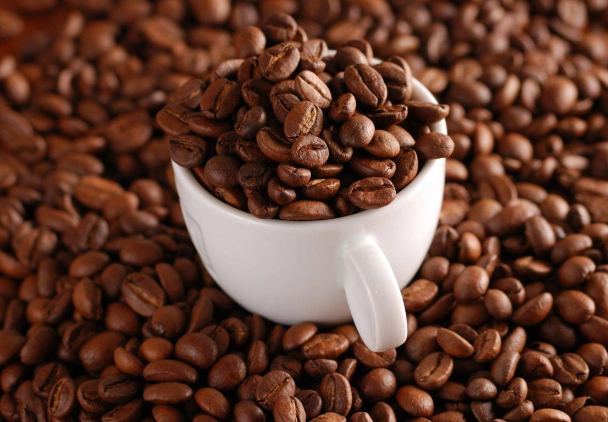
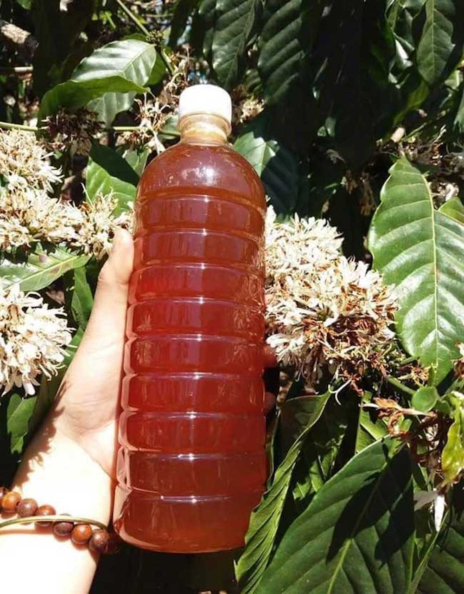

Vùng đất và con người
Tây Nguyên gồm 5 tỉnh Đắk Lắk, Gia Lai, Đắk Nông, Kon Tum và Lâm Đồng, nằm trên vùng cao nguyên đất đỏ bazan màu mỡ ở miền Trung Việt Nam. Khí hậu mát mẻ quanh năm cùng thổ nhưỡng đặc trưng đã tạo nên những vùng chuyên canh cà phê, hồ tiêu, cacao, sầu riêng, bơ... nổi tiếng khắp cả nước.
Đây cũng là nơi sinh sống của nhiều dân tộc anh em như Ê Đê, Gia Rai, Ba Na, M'nông... với không gian văn hoá cồng chiêng được UNESCO công nhận là Di sản văn hoá phi vật thể đại diện của nhân loại, cùng những nét sinh hoạt truyền thống như uống rượu cần, dệt thổ cẩm, lễ hội đâm trâu, bỏ mả...


Đặc sản từ đại ngàn
Nhờ điều kiện tự nhiên thuận lợi, Tây Nguyên là vựa nông sản lớn của Việt Nam: cà phê Buôn Ma Thuột, hồ tiêu Gia Lai, cacao Đắk Nông, sầu riêng và bơ Đắk Lắk, trà atiso Lâm Đồng... mỗi sản phẩm đều mang hương vị riêng của vùng đất bazan.
Website này giới thiệu những đặc sản tiêu biểu đó, cùng nguồn gốc từng vùng, giúp người dùng hiểu rõ hơn về xuất xứ và câu chuyện phía sau mỗi sản phẩm.
Khám phá sản phẩm